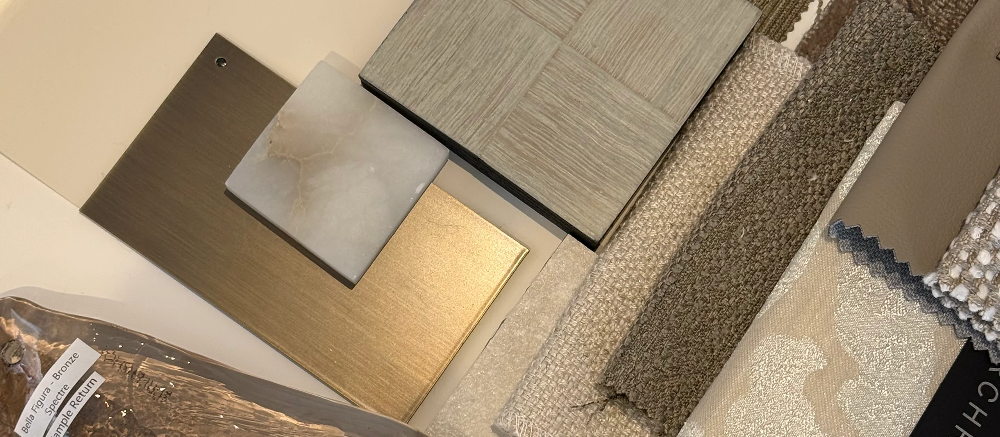
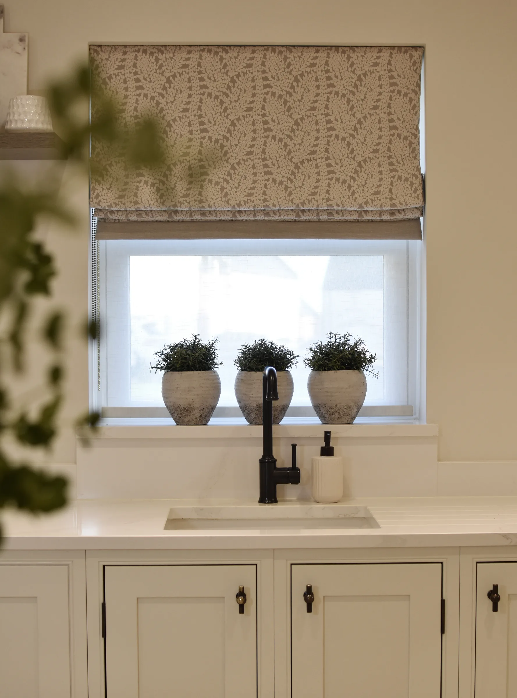

We create LUXURY TIMELESS INTERIORS that effortlessly combine elegance, beauty and functionality, thoughtfully designed to stand the test of time.
Amanda Ruth Interiors is a high-end interior design studio based in the North East & Yorkshire that specialises in luxury residential interiors. We offer a highly personalised and friendly design service. Our focus is on creating beautiful homes that are bespoke to the individual client.
‘It’s all too often we see beautiful designs but they’re useless if not practical. Spending time to understand what the space functionally requires allows the foundation to build bespoke, custom-made designs.’
Ruth, Amanda Ruth Interiors


Amanda Ruth Interiors was founded in January 2022 by Ruth and Noman, born from a shared appreciation for beautiful design, refined aesthetics and thoughtfully considered interiors.
As Co-Director and Senior Interior Designer, Ruth brings a wealth of creativity, experience and an instinctive eye for detail to the studio. Following the completion of her bachelor’s degree in Fashion and Marketing, her passion for interiors began while designing her family home — a bespoke six-bedroom oak-framed residence nestled in the Yorkshire countryside. Drawing upon her background in fashion, her appreciation for beautiful materials, textures and timeless design naturally evolved into a passion for creating exceptional interior spaces.
In 2016, Ruth began her professional journey as a Junior Interior Designer at a luxury interior design practice in Yorkshire. Three years later, she progressed to another prestigious design studio, where she further developed her creative vision, technical knowledge and confidence in delivering bespoke interiors. By 2019, Ruth had established herself as a mid-weight designer, contributing to some of Yorkshire's most distinguished residential properties. With a desire to establish a studio that truly reflected her own design philosophy, Ruth founded Amanda Ruth Interiors in 2022 alongside Noman, who joined as Co-Director. Together, they have built a design practice founded on creativity, individuality, exceptional quality and a meticulous attention to detail.
Their complementary strengths and shared vision bring a considered, collaborative approach to every project. From the initial concept through to the finishing touches, each interior is thoughtfully curated to reflect the individuality, lifestyle and aspirations of the people who call it home. At Amanda Ruth Interiors, we believe true luxury lies in the details. Our aspiration is to create beautifully balanced interiors that seamlessly combine elegance, comfort and functionality — timeless spaces designed to be lived in, loved and to stand the test of time.


At Amanda Ruth Interiors, we pride ourselves on creating BEAUTIFUL, FUNCTIONAL and TIMELESS Interiors, individually tailored to each space and the way our clients live.
We believe truly exceptional interiors are found in the details. From carefully considered layouts to bespoke furniture, refined materials and high quality finishes, every element is thoughtfully selected to create a cohesive and enduring design that will stand the test of time.